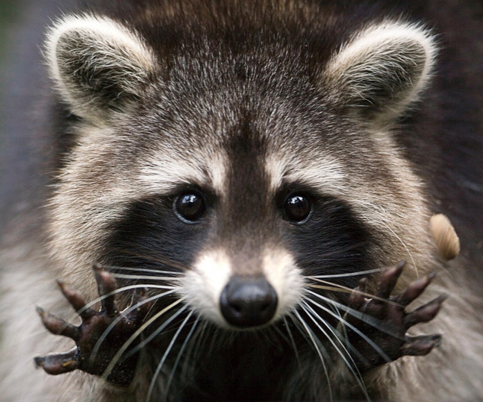

| 
Ено́ты (лат. Procyon) — род хищных млекопитающих
семейства енотовых. Представители рода — обитатели Америки. На территории Евразии и, в частности,
в России интродуцирован единственный вид — енот-полоскун.
В России енота изначально знали по
шкуркам, которые назывались «генеттовыми мехами», потому что зверек с полосатым хвостом напоминает
генетту. Позднее это название превратилось в «генот» или енот. Английское название raccoon,
заимствованное и в некоторые другие языки, происходит из поухатанского языка — одного из языков
американских индейцев, где енота называли ärähkun, от ärähkuněm, что означает «скребёт руками»;
во многих европейских и азиатских языках енота буквально называют «медведь-полоскун», «моющий медведь».
Латинское (греческого происхождения) название Procyon значит «пред-собака», «перед собакой»; так же
называется звезда Процион в созвездии Малого Пса.
Енот-полоскун, или американский енот
(лат. Procyon lotor) — хищное млекопитающее рода еноты семейства енотовых. Один из немногих видов,
которые процветают в условиях усиления антропогенного воздействия, выражающегося в постепенном
окультурировании угодий. Енот хорошо приживается в местах интродукции, хотя и является в целом
теплолюбивым видом. На территории РФ вид хорошо освоил западные (причерноморские) и восточные
(прикаспийские) регионы Северного Кавказа.
Енот хорошо освоил тугайные леса в бассейнах Терека и Сулакана
площади более 120 тыс. га. Зверь успешно освоил угодья Магарамкентского, Дербентского и Каякентского
районов республики Дагестана. |
|
Ко́шка, или дома́шняя ко́шка (лат. Félis silvéstris cátus) — домашнее животное,
одно из наиболее популярных (наряду с собакой) «животных-компаньонов».
С зоологической точки зрения
домашняя кошка — млекопитающее семейства кошачьих отряда хищных. Ранее домашнюю кошку нередко
рассматривали как отдельный биологический вид. С точки зрения современной биологической систематики
домашняя кошка (Felis silvestris catus) является подвидом лесной кошки.
Являясь одиночным
охотником на грызунов и других мелких животных, кошка — социальное животное, использующее для общения
широкий диапазон звуковых сигналов, а также феромоны и движения тела.
В настоящее время в мире
насчитывается около 600 млн домашних кошек, выведено около 200 пород, от длинношёрстных (персидская кошка)
до лишённых шерсти (сфинксы), признанных и зарегистрированных различными фелинологическими организациями.
На протяжении 10 000 лет кошки ценятся человеком, в том числе за способность охотиться на грызунов и
других домашних вредителей.
Согласно данным генетических исследований, все домашние кошки по
материнской линии происходят как минимум от пяти представительниц подвида степная кошка (Felis silvestris
lybica), имеющих разные гаплотипы митохондриальной ДНК. Обособление подвида Felis silvestris lybica
произошло около 130 тысяч лет назад. Степная кошка до сих пор распространена по всей Северной Африке
и в обширной зоне от Средиземноморья до Китая, где она обитает в зарослях саксаула в пустынях, в кустарниках
возле водоёмов, в предгорьях и горах. |